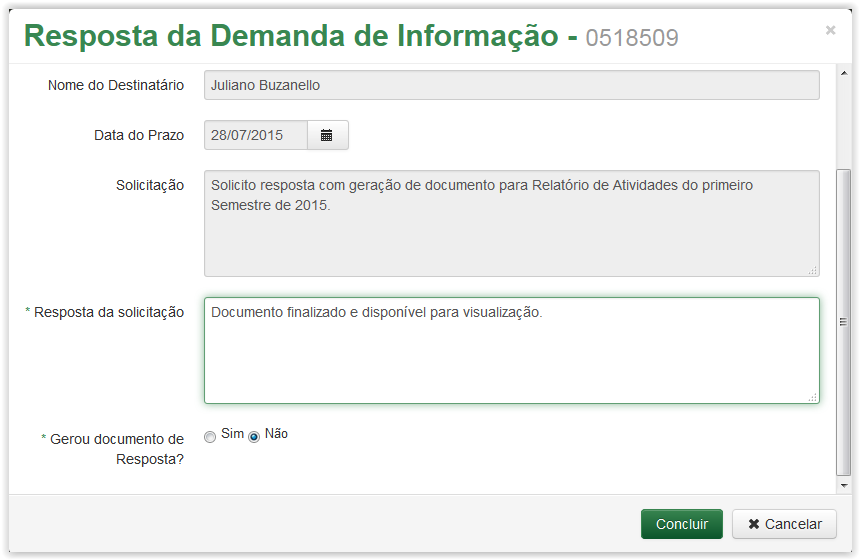
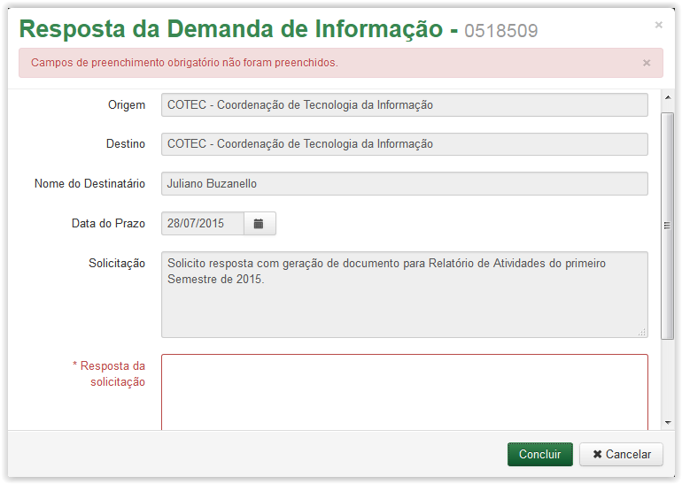

Acompanhar Demanda de Informação
Para responder uma demanda recebida, clique no ícone exibido na coluna Ações:
Tela Demanda de Informação - Aba Demandas Recebidas - Clicando no ícone para responder uma demanda
Após clicar no ícone , o sistema apresenta a tela Resposta da Demanda de Informação (Veja Nota 1):
Tela Resposta da Demanda de Informação
Informações para demanda:
Origem: |
Unidade que está respondendo a Demanda. |
Destino: |
Para onde se destina a demanda. |
Nome do Destinatário: |
Nome de quem receberá a demanda gerada. O campo terá a apresentação de relação direta ao Destinatário informado no campo anterior. |
Data do Prazo: |
Data limite para que seja gerada a resposta da demanda. |
Solicitação: |
Texto de orientação da necessidade pela qual foi gerada a demanda. |
Resposta da solicitação: |
Texto da resposta à Demanda. |
Gerou documento de Resposta: |
Informação se foi gerado ou não algum documento de resposta. |
Número Digital/Processo: |
Será apresentado caso a Resposta tenha gerado documento. |
 Preenchendo resposta de demanda de informação!
Preenchendo resposta de demanda de informação!

Tela Resposta da Demanda de Informação - Campo Resposta da Solicitação
Tela Resposta da Demanda de Informação - Campo Gerou Documento de Resposta
Tela Resposta da Demanda de Informação - Campo Número Digital/Processo
 o sistema cancela a resposta da demanda recebida e retorna para a tela Demanda de Informação, no entanto, ao clicar no botão o sistema finaliza a Demanda para quem a gerou.
o sistema cancela a resposta da demanda recebida e retorna para a tela Demanda de Informação, no entanto, ao clicar no botão o sistema finaliza a Demanda para quem a gerou.
IMPORTANTE!!
 Nota 1:
Nota 1:
Os campos obrigatórios são indicados pelo sinal de asterisco (*) na cor verde ao lado do nome. Quando algum ou nenhum campo obrigatório for preenchido, o sistema apresenta uma mensagem de erro: "Campos de preenchimento obrigatório não foram preenchidos.".

Comportamento da tela Resposta da Demanda de Informação após clicar no botão Concluir sem preencher os campos obrigatórios.
Created with the Personal Edition of HelpNDoc: Easily create Help documents